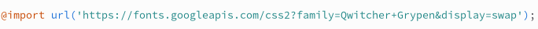
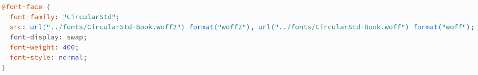

CSS-властивості шрифту
Підключеня шрифтів з Google fonts
Підключеня локальних шрифтів
Властивості
font-family: "Ім'я шрифту", "Ім'я шрифту", тип шрифту; - встановлює родину шрифту
Типи шрифтів:
- serif — шрифт з зарубками (засічками)
- sans-serif — рублений (без зарубок)
- cursive - курсивні шрифти
- fantasy — декоративні
- monospace — моноширинні
font-size: "числове значення або зарезервований літерал"; - встановлює розмір шрифту
font-style: назва стилю; - встановлює стиль шрифту
Стилі шрифтів:
- normal (за замовчуванням) - звичайний (не змінений, стандартний) стиль
- italic - курсив
- oblique - нахилення літер
font-weight: цифрове значення або значення словом (словесне);
Вага шрифтів:
- 100 - thin
- 300 - lite
- 400 - Regular (normal) (за замовчуванням)
- 500 - medium
- 600 - semibold
- 700 - bold
- 900 - black
CSS-властивості тексту
color: "слово або код кольору; - встановлює колір тексту
text-align: значення; -встановлює вирівнювання тексту
Значення:
- center - вирівнює по центру
- left - вирівнює по лівому краю
- right - вирівнює по правому краю
- justify - вирівнює текст по ширині об'єкту в якому він знаходиться автоматично змінюючи пробіли між словами
text-decoration: значення; -додає тексту певне оформлення
Значення:
- overline - лінія над текстом
- line-through - закреслює текст
- underline - лінія під текстом
- none - (за замовченням) відміняє змінений раніше парамет
text-shadow: горизонтальне_зміщення вертикальне_зміщення розмір колір; -додає тексту тінь
Може бути мульти-тінь (значення через кому - text-shadow: 2px 2px 5px #000, 5px -2px 10px red;)
text-transform: значення; -встановлює тип (регістр) літер (прописні або заглавні)
Значення:
- capitalize - кожне слово починається з заглавної літери
- lowercase - усі літери прописні (нижній регістр)
- uppercase - усі літери заглавні (верхній регістр)
- none - (за замовчунням) не змінює (або відмініє) значення
line-height: значення; -визначає міжрядковий інтервал (відстань) (висота рядка)
text-indent: значення;- червона строка. Встановлює відступ зліва у першого рядка тексту
letter-spacing: значення; - встановлює інтервал між літерами (символами)
white-space: значення; управляє поведінкою пробілів між словами
Значення:
- nowrap - забороняє переніс рядка
- normal - (за замовчунням) не змінює (або відмініє) значення
word-spacing: значення; - встановлює інтервал між словами
CSS-властивості блоків
box-sizing: значення; - застосовується для зміни алгоритму обчислення величин
Алгоритми обрахунку:
- content-box - (за замовченням) додає відступи до розміру об'єкту
- border-box - значення розмірів враховують відступи
background-color: #7A956B; - встановлює колір фону
padding: значення; - Внутрішній відступ. Відступи ВСЕРЕДЕНІ об'єкту. Від кордонів об'єкту ДО ЙОГО КОНТЕНТУ. При вказанні значення у відсотках відсоток береться від ширини батьківського об'єкту, навіть для горизонтальних відступів
Значення:
- padding: з_усіх_сторін;
- padding: зверху_знизу зправа_зліва;
- padding: зверху зправа_зліва знизу;
- padding: зверху зправа знизу зліва;
- padding-right: значення;
- padding-bottom: значення;
- padding-left: значення;
margin: значення- овнішній відступ.Відступи ЗОВНІ об'єкту. Значення можуть бути від'ємними!
Значення:
- margin: з_усіх_сторін;
- margin: зверху_знизу зправа_зліва;
- margin: зверху зправа_зліва знизу;
- margin: зверху зправа знизу зліва;
- margin-top: значення;
- margin-right: значення;
- margin-bottom: значення;
- margin-left: значення;
width: значення- чітко задає ширину блочного (блочно-рядкового) об'єкту НЕ працює зі рядковими об'єктами
Значення:
- auto - (за замовченням) автоматичний розмір